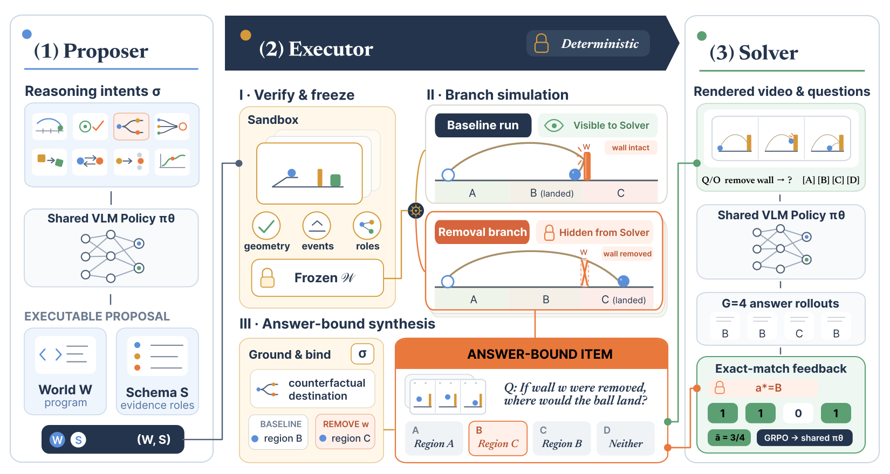
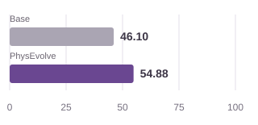
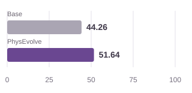
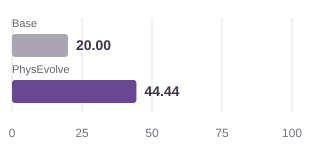

PhysEvolve: Verifier-Grounded Self-Evolution for Physical Reasoning with Executable Worlds
Executable worlds
Video unavailable. Open video
Throwing
Ball trajectories through removable obstacles.
Video unavailable. Open video
Collision
Motion transfer through a chain of contacts.
Video unavailable. Open video
Motion
Rolling, sliding, and friction-dependent motion.
Reference scenes · Original speed
Abstract
Physical reasoning underpins how embodied systems understand and act in the physical world, yet vision-language models (VLMs) remain unreliable on questions about dynamics and physical causality. Progress is critically constrained by the scarcity of grounded counterfactual training data, as observational videos capture only the factual trajectory that occurred. The self-evolving paradigm offers a route beyond fixed datasets by enabling models to construct their own training problems. Extending this paradigm to physics, however, requires an external source of truth that can both validate model-proposed environments and verify alternative physical outcomes under intervention. We introduce PhysEvolve, a verifier-grounded self-evolving framework that trains VLMs for causal physical reasoning from model-proposed executable worlds and simulation-authored tasks. At each round, a shared VLM proposes executable world programs and evidence schemas; a deterministic physics engine freezes each valid world, simulates matched baseline and body-elided counterfactual branches, and synthesizes discrete, answer-bound visual tasks. Exact verifier feedback from task solving updates both the shared policy via GRPO and an adaptive curriculum over physical intents. Starting from Qwen3-VL-8B-Instruct, PhysEvolve achieves targeted gains across PhysBench, CausalPhys, and ContPhy without human intervention data, improving PhysBench Throwing by 8.8 points and ContPhy Counterfactual Removal and Goal-Pit by 7.4 and 24.4 points. These gains concentrate on interaction-sensitive and altered-world questions, demonstrating zero-shot transfer of causal principles to unseen complex dynamics (cloth, fluid, soft bodies) and real-world video.
Method

Results
Targeted improvements in physical and counterfactual reasoning.
Throwing
+8.78 pp

Accuracy (%) · n = 410
Counterfactual Removal
+7.38 pp

Accuracy (%) · n = 122
Goal-Pit
+24.44 pp

Accuracy (%) · n = 90
Overall benchmark accuracy
| Benchmark | Base | PhysEvolve | Δ (pp) |
|---|---|---|---|
| PhysBench | 52.92 | 53.47 | +0.55 |
| CausalPhys | 53.94 | 54.50 | +0.56 |
| ContPhy | 37.08 | 39.54 | +2.46 |
Matched Qwen3-VL-8B-Instruct comparison at step 100; one training run per configuration. The charts show selected task subsets; the table reports overall accuracy. Data
BibTeX
@misc{hu2026physevolve,
title = {PhysEvolve: Verifier-Grounded Self-Evolution for Physical Reasoning
with Executable Worlds},
author = {Hu, Jinyuan and Jiang, Yilei and Tang, Chen and Cai, Minghong
and Liu, Xinran and Yue, Xiangyu},
year = {2026}
}